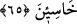

Lâkin onların bir kısmı isteyerek, bir kısmı da korkarak icâbet etmişlerdir. Her iki
durumda da hükmün Allah’ın elinde olduğu ortaya çıkar. Allah, hitâbını bir kısmına
hidâyeti gerektirecek, bir kısmına da dalâleti gerektirecek şekilde işittirmiştir. Zira
Tûr’un gözleri önünde tepelerine dikilmesinden daha açık bir burhân bulunmayacağı
ortada iken Allah’ın yardımının gelmemesi onları mahvetmiş, bu mûcize onlara fayda
vermemiştir. “Size verdiğimize kuvvetle sarılın” emri, Allah’ın verdiği emir, yasak,
ibâdet, ilim ve bunun gibi şeylerin, ilâhî bir yardım ve rabbânî bir kuvvet olmaksızın
insan kuvvetiyle hakkınca yerine getirilemeyeceğine işâret eder.
Onda bulunan remz, işâret, ince meseleleri ve hakîkatları daima aklınızda bulundurun
ki, mâsivâdan değil, sadece Allah’dan korkanlardan olabilesiniz.
Allah’dan bir imtihan olarak, söz verip doğru yola girdikten sonra, beşerî arzularınıza
yenilerek doğru yoldan ve şerîata uymaktan yüz çevirdiniz.
Eğer Allah, başında size lütufla davranmasaydı, ortasında sizi söz vermeye muvaffak
kılmasaydı, sonunda da tevbenizi kabûl edip onda sebât etmenizi sağlamasaydı, siz
isyâna devamda ısrarlı kimselerden olurdunuz. Siz de kendinizden önceki ısrârcılar ve
zâlimler gibi dünyâyı da âhıreti de elden kaçırmış, her ikisinde de cezâya uğrayacak,
aldanmış, hüsrân içinde kimselerden olurdunuz.
65. İçinizden cumartesi günü azgınlık edip de, bu yüzden kendilerine: Aşağılık
maymunlar olun! dediklerimizi elbette bilmektesiniz.
Âyet, Peygamber Efendimiz zamânındaki yahûdîlere hitab ederek şöyle demektedir:
“Ey İsrâîloğulları, Allah’a yemin olsun ki, siz atalarınızdan Cumartesi gününün
hürmetini çiğneyenleri, o gün sadece ibâdetle meşgul olmaları gerekirken, böyle
yapmayıp avlanmaya gidenleri iyi bilirsiniz.”
“Sebt” (Cumartesi) kelimesi “kesmek” mânâsına gelir. Çünkü yahûdîler “Cumartesi”
günü bütün işlerini kesip Allah’a ibâdet etmekle emrolunmuşlardır. İhtiyârî hareketleri
kestiği için, geceye de “Sübât” denilmiştir. Âyet, Rasûlullah dönemindeki yahûdîleri
uyarmakta ve tehdîd etmekte, onlara sanki şöyle demektedir: Atalarınızı nasıl
cezâlandırdığımızı biliyorsunuz, aynı şeyin sizin başınıza da gelmesinden sakının.
Bu hâdise şudur; İsrâîloğulları Dâvud (a.s.) zamanında, Medîne ile Şam arasında
Kızıldeniz sâhillerinde “Eyle” denilen yerde ikamet etmekteydiler. Allah onlara
“Cumartesi” günü balık avlamayı yasaklamıştı. Ne var ki o gün, denizdeki bütün
balıklar, ya İsrâîloğulları’nın imtihan edilmesi için, ya da karnında Yûnus (a.s.)’u
taşıyan balığı ziyâret için Eyle sâhillerine yığılırlardı. O kadar ki Cumartesi günü
balıkların başlarından deniz görünmez olurdu. Cumartesi geçince balıklar denizin